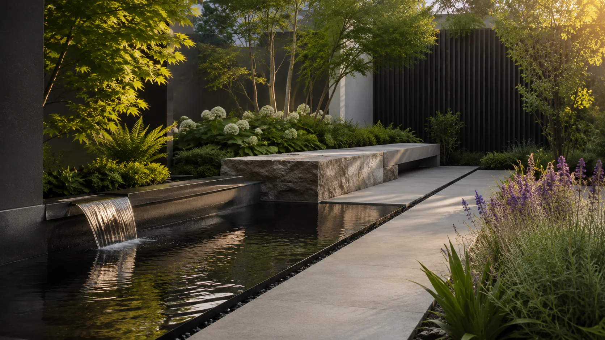

01 · Služby
Návrhy zahrad
Dobrý návrh propojuje vaše představy s možnostmi místa. Vycházíme z architektury domu, okolí i způsobu, jakým chcete zahradu využívat. Promýšlíme prostor, materiály a výsadby s ohledem na každodenní fungování, nároky na péči i to, jak se bude zahrada v dalších letech proměňovat. Navrhujeme jednotlivé záhony, rodinné zahrady i venkovní prostory škol, zařízení sociální péče a dalších institucí.
Rozsah projektu vždy přizpůsobujeme konkrétnímu místu a tomu, co od něj potřebujete. Výsledkem jsou srozumitelné podklady pro realizaci – podle rozsahu projektu výkresy, vizualizace, osazovací plány, seznamy rostlin a specifikace materiálů.
Jak probíhá spolupráce
Úvodní domluva
Poznáme vaše představy a podklady a stanovíme rozsah projektu.
Setkání na zahradě
Poznáme místo, jeho možnosti i způsob, jakým chcete zahradu využívat.
Koncept
Navrhneme základní uspořádání prostoru a společně projdeme jeho směr.
Dopracování návrhu
Upřesníme materiály, výsadby a jednotlivé prvky zahrady.
Předání projektu
Předáme a vysvětlíme podklady potřebné pro realizaci.
Co může následovat
Na návrh můžeme navázat realizací nebo vás podpořit při tvorbě zahrady svépomocí.
Cena návrhu
Malá zahrada
do 300 m²20 000–35 000 KčStřední zahrada
300–800 m²35 000–50 000 KčVelká zahrada
nad 800 m²individuální cenaCena se odvíjí od velikosti pozemku, jeho členitosti a rozsahu navrhovaných úprav. Menší, ale náročnější pozemek může rozsahem projektu odpovídat vyšší kategorii. Konkrétní nabídku připravíme po úvodní domluvě.
Návrh samostatného záhonu
Promyšlená výsadba může změnit atmosféru celé zahrady. Součástí je osazovací plán se seznamem druhů a jejich počty.
Veřejné prostory a instituce
Navrhujeme a realizujeme také zahrady a venkovní prostory škol, zařízení sociální péče a dalších institucí. Máme zkušenosti s projekty pro školu i domov s pečovatelskou službou. Vycházíme z potřeb lidí, kteří prostor každodenně využívají, i z možností jeho provozu a údržby.
Podle charakteru místa vytváříme prostor pro odpočinek, setkávání, hru nebo výuku venku. Návrh připravujeme v dialogu se zástupci instituce, aby odpovídal skutečnému využití a plánovanému rozpočtu. Úpravy můžeme rozdělit do etap a jejich průběh naplánovat s ohledem na chod zařízení.